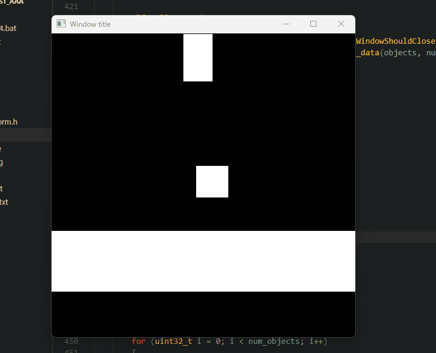
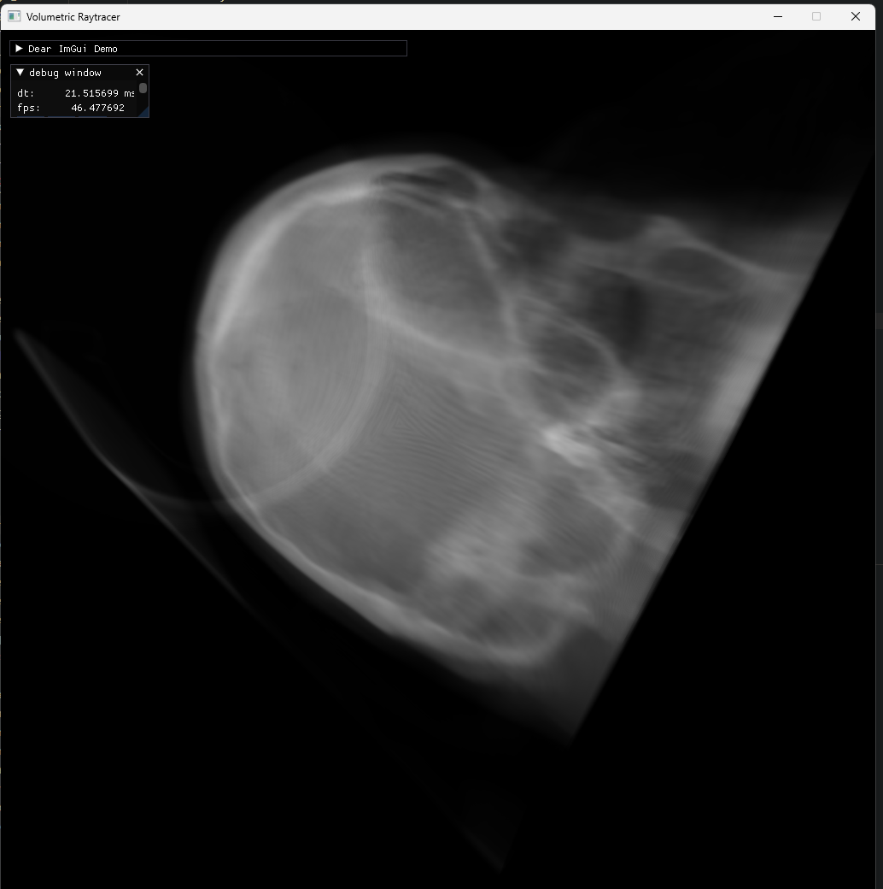
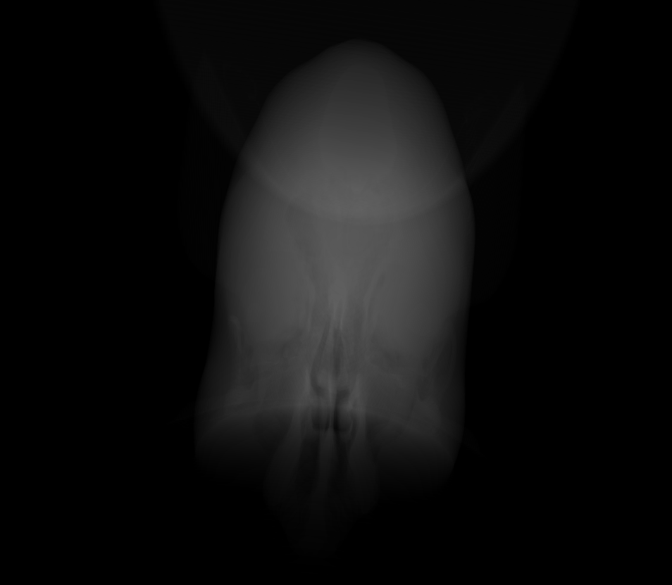
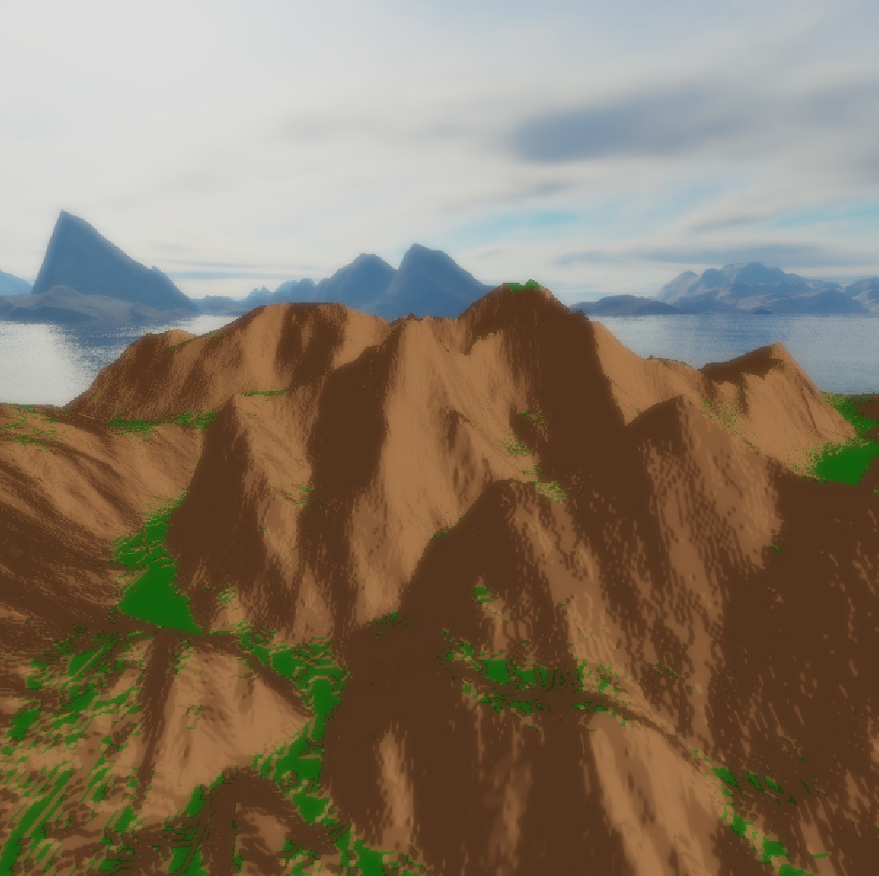
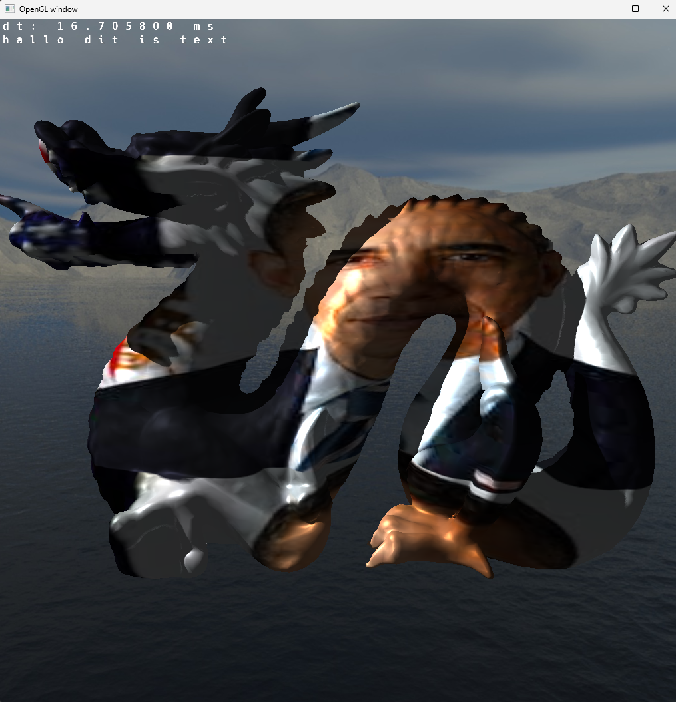
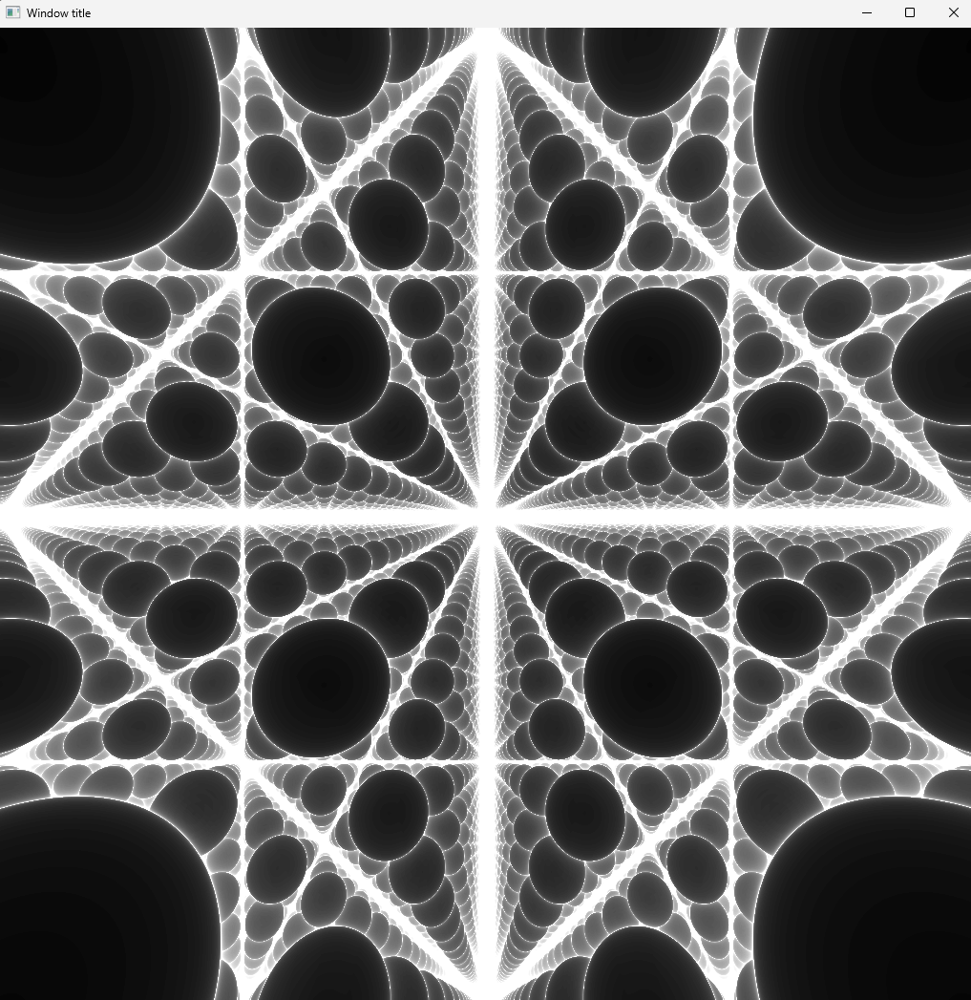

Hello, my name is David Rebel. I am studying physics, but I also have an interest in computer science.
This website shows some of my computer science projects, mostly in the computer graphics department.
I have programmed the majority of my recent projects in C, and for the computer graphics projects I have used OpenGL as a graphics API.
Projects
Contact
Click on the icon below to go to my LinkedIn page. If you want to contact me, send me a message on there.
2D physics engine

This project is the first non-conputer graphics project in a while for me. I do use the knowledge from my computer graphics endevours, but it is not the interesting aspect of this project.
At the time of starting this project, I was getting much more focussed and invested in developing my physics skills.
This engine is currently very primitive, and I will continue to work on it for the time being.
Physics engines are massively complex programs, so I have a lot to learn.
My current goals for this project are realistic friction, 2D polygon shapes, strings or springs to connect objects, and making it all run in a stable and fast manner.
Volumetric raytracer

This project was my first serious attempt at a non-rasteriser renderer. I am interested in renderers which are more geometry and math intensive, such as ray- or pathtracing, or even raymarching.
The raytracer's focus is on volumetrics. A 3D texture can be set as the density field of a cube, so complex semi-transparent objects are able to be rendered with this technique.
Transparency is an interesting issue in rasterising renderers, because what is being rendered is actually just an infinitely thin shell around the object, and no actual data of the inside of the model is taken into account when rendering the object.
With volumetric rendering (which is not exclusive to raytracers, it should be noted) the object can be seen as a density field, and will be rendered according to the Beer-Lambert law.
Implementing in-scattering in this project was quite a challenge, because it was difficult to see when the code was right and when it was wrong. There were also a lot of variables to play with, which could also cause an unrealistic image.
Lesson learned, test your code on a scene where the feature you are implementing is the center of attention, and will be immediately visible if implemented wrongly.
I followed the excellent tutorial of scratchapixel.com, if you have the desire to create your own (volumetric) raytracer, I would recommend their tutorials on their website.
Texture slicing

Texture slicing is a lesser known technique for volumetric rendering. After I was introduced to volumetric rendering with volumtric raytracing, I was interested in a technique that would run faster than the raytracer, but could still render semi-transparent objects.
Texture slicing runs a lot faster than the raytracing technique, because it can take full advantage of the highly specialised GPU's by still using rasterising.
However, it renders hundreds of transparent 'slices' of the density texture which have a normal towards the camera.
This technique produced surprisingly good results. Although I have figured out that it is not realistic. The model assumes that transmittance is only dependant on distance travelled through the object, which is not true, because the average density also plays a role in calculating the transmittance along that ray.
However, this effect is barely noticable, until you compare the result with the result of the much more realistic raytracer.
Terrain rendering

I have explored various techniques often used in terrain rendering, such as tesselation and variable level of detail using quadtrees.
In this project, an image is loaded as a heightmap. I used the stb_image single header library for the loading of the image.
I experimented with tesselation shaders for the first time in this project. They can be very powerful, but I think that I would have a difficult time recognising when it could be useful outside of this usecase.
Another technique for different levels of detail across the terrain are quadtrees. This will typically run slightly less fast, because the CPU has to generate a mesh.
Tesselation offloads the CPU and uses the GPU for adjusting the vertex density at certain places on the terrain.
In this project I also implemented bloom, which was relatively easy. I learned how to write to multiple color attachments in one single fragment shader pass; a technique which is very useful, for example for deferred shading.
Deferred shading is another technique which I want to implement, to allow for more expensive lighting calculations.
Asset importing

As a part of my OpenGL learning adventure, I was getting tired of so many manually created 3D models.
I wanted some more complex, interesting models to render to test my renderer.
So I spent some time writing a .obj file importer. I chose the .obj file format because it was simple and widely used.
There are definitely flaws (or things that I do not like) with the format, such as the data being stored in a human-readable format, and not binary.
The importer does not export indices, only vertices. I chose this to make the importer faster, because I could not figure out a clever way to eliminate duplicate vertices.
Raymarcher

This raymarcher is very primitive, and it only has very basic features. It can render an infinite grid of objects